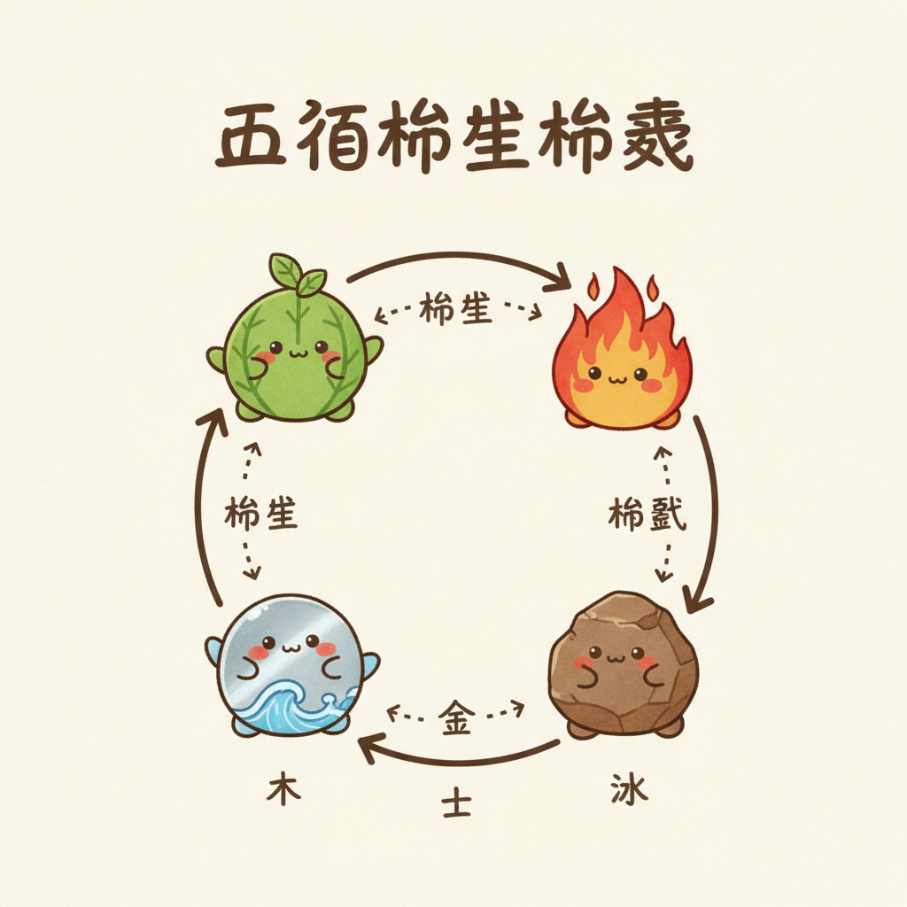
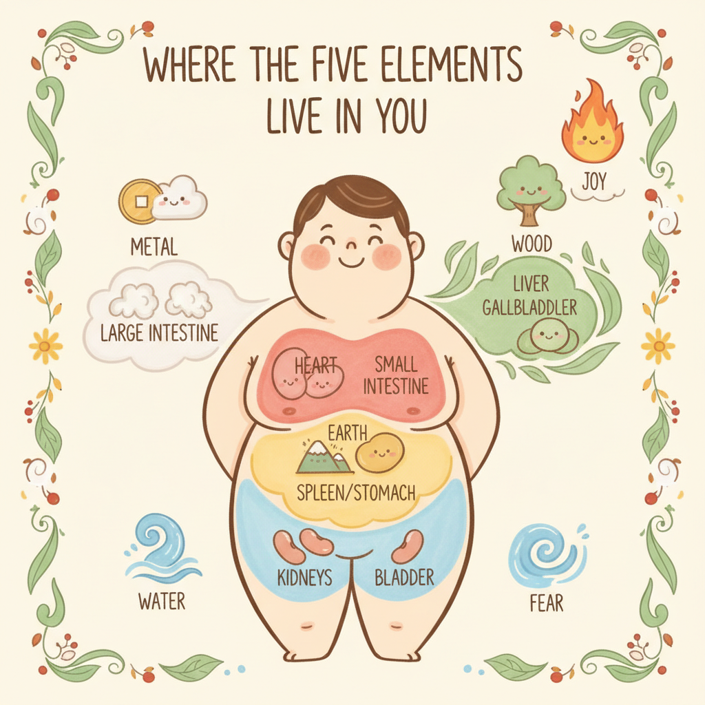

五行是古代的系統思維

五行不是五種東西。是五種動態關係。
很多人聽到「金木水火土」就想到算命。但你把迷信的濾鏡拿掉，看看它到底在說什麼——木會生長、火會蔓延、土會承載、金會收斂、水會流動。這五種特質，剛好就是你身體裡五大功能網絡的運作模式。
現代系統生物學講的是「反饋迴路」和「動態平衡」。兩千年前的中醫用相生相剋講的是同一件事，只是語言不一樣。肝臟代謝不好，脾胃消化就跟著出問題；腎臟功能弱了，骨頭和聽力會最先反映。這些連鎖反應，不是巧合，是系統。
- 木 Wood — 肝膽系統 — 解毒、代謝、荷爾蒙調節
- 火 Fire — 心與小腸系統 — 循環、意識、體溫調節
- 土 Earth — 脾胃系統 — 消化、免疫、營養吸收
- 金 Metal — 肺與大腸系統 — 呼吸、皮膚屏障、黏膜免疫
- 水 Water — 腎與膀胱系統 — 內分泌、水分平衡、骨髓、生殖
每一行不是指一個器官，而是一整個功能網絡。「肝」不只是那顆肝臟，而是包含解毒通道、膽汁分泌、肝醣儲存、雌激素代謝的整套系統。把它想成一個部門，裡面有好幾個組別在同時運作。
相生循環就是促進關係：木生火、火生土、土生金、金生水、水生木。像母親養孩子，上一個系統的輸出是下一個系統的燃料。相剋循環就是制約關係：木剋土、土剋水、水剋火、火剋金、金剋木。像主管管下屬，防止任何一個系統失控暴走。
五行個論

點開每張卡片，看看那個系統在你身體裡怎麼運作。平衡的時候是什麼狀態，失衡的時候身體會發出哪些訊號。每一行都附了對應的精油和一個你今天就能做的小事。
木 Wood — 肝膽系統
現代生理學怎麼說
肝臟負責兩階段解毒（Phase I 氧化、Phase II 結合），製造膽汁幫助脂肪消化，儲存肝醣調節血糖，代謝雌激素維持荷爾蒙平衡。膽囊則是膽汁的倉庫，吃飯時釋放出來乳化脂肪。這整套系統管的是「疏通」——毒素要通、膽汁要通、情緒也要通。
為什麼跟「怒」有關
中醫說「怒傷肝」，現代研究發現慢性憤怒會刺激交感神經持續亢奮，導致肝臟血流量改變、解毒效率下降。反過來，肝功能不好的人也特別容易暴躁——不是脾氣差，是身體在求救。
平衡的感覺
- 做決定乾脆俐落
- 有創意、有彈性
- 眼睛明亮、視力穩定
- 筋骨柔軟、活動自如
失衡的訊號
- 容易發怒、煩躁、情緒壓不住
- 眼睛乾澀、偏頭痛
- 筋骨僵硬、抽筋
- 經前症候群（PMS）、月經不順
- 兩側太陽穴脹痛
對應精油
- 佛手柑 Bergamot — 疏肝理氣，把悶在胸口的那口氣散開
- 羅馬洋甘菊 Roman Chamomile — 平肝降火，讓怒氣有地方去
- 檸檬 Lemon — 利膽促進消化，清爽的酸味剛好對應木行
今天就能做的小事
晚上 11 點到凌晨 3 點是肝膽經的時辰，這段時間必須躺平。不是滑手機的那種躺，是真的睡。白天可以做伸展操，側彎拉伸身體兩側的膽經路線。酸的食物適量吃，烏梅、檸檬水都行，但胃酸多的人別空腹喝。
火 Fire — 心與小腸系統
現代生理學怎麼說
心臟每天跳動約 10 萬次，泵出 7,500 公升的血液。心輸出量（cardiac output）決定全身的氧氣和養分供應。中醫說「心主神明」，現代神經心臟學（neurocardiology）發現心臟有自己的神經網絡，約 4 萬個神經元，能獨立處理資訊。小腸則是營養吸收的主戰場，全長約 6 公尺，表面積展開有一個網球場那麼大。
為什麼跟「喜」有關
適度的喜悅讓心臟節律穩定，心率變異度（HRV）提高。但過度興奮、大喜大悲同樣傷心——不是成語，是真的。臨床上「壓力型心肌病變」（Takotsubo）就是極端情緒造成的。所以古人說「喜傷心」，不是反對開心，是提醒你別太嗨。
平衡的感覺
- 發自內心的快樂，不是假裝的
- 表達流暢、溝通有溫度
- 思路清晰、專注力好
- 臉色紅潤、手腳溫暖
失衡的訊號
- 焦慮、心悸、失眠
- 心神不寧，坐立不安
- 口腔潰瘍反覆發作
- 手心發熱或異常冰冷
- 過度亢奮，停不下來
對應精油
- 依蘭 Ylang Ylang — 降心火，幫你從亢奮狀態緩下來
- 薰衣草 Lavender — 安神助眠，幾乎所有睡眠研究都有它
- 玫瑰 Rose — 開心竅，讓封閉的心重新感受溫度
今天就能做的小事
中午 11 點到 1 點是心經時辰，這時候小睡 15 到 20 分鐘效果最好。苦味食物適量攝取——苦瓜、黑巧克力（70% 以上）、蓮子心泡茶。最簡單的方法：今天對一個人真誠地笑一次，不帶目的的那種。
土 Earth — 脾胃系統
現代生理學怎麼說
消化系統分泌超過 20 種消化酶，腸道菌群約 100 兆個微生物，腸道黏膜上駐守了人體約 70% 的免疫細胞（GALT，腸道相關淋巴組織）。所以「脾胃是後天之本」不是虛的——你吃進去的東西能不能變成養分，你的免疫力夠不夠強，全看這套系統的狀態。
為什麼跟「思」有關
想太多的時候食慾會怎樣？不是暴食就是完全不想吃。壓力會改變腸道蠕動速度、減少消化酶分泌、破壞菌群平衡。腸腦軸（gut-brain axis）的研究已經證實：腸道和大腦是雙向通訊的。你的胃在「第二個大腦」不是比喻，是科學。
平衡的感覺
- 消化順暢、吃什麼都能吸收
- 肌肉有力、體態穩定
- 腳踏實地、有安全感
- 照顧別人不會掏空自己
失衡的訊號
- 想太多、反覆糾結、鑽牛角尖
- 脹氣、消化不良、軟便或便秘交替
- 容易疲倦、四肢無力
- 嗜甜、特別想吃甜食
- 肌肉鬆弛、代謝變慢
對應精油
- 甜橙 Sweet Orange — 健脾開胃，聞到就覺得心情放鬆
- 薑 Ginger — 溫胃散寒，冬天用特別舒服
- 檸檬草 Lemongrass — 化濕消脹，夏天潮濕的時候救星
今天就能做的小事
早上 7 到 9 點是胃經時辰，這時候吃一頓溫熱的早餐最重要。不要空腹灌冰飲。吃飯的時候放下手機，每口嚼 20 下。聽起來很無聊，但你的胃會非常感謝你。換季時期特別注意保暖腹部，一條薄圍巾圍在肚子上就有差。
金 Metal — 肺與大腸系統
現代生理學怎麼說
肺臟的氣體交換面積約 70 平方公尺，每天處理約 11,000 公升的空氣。皮膚是人體最大的器官（約 1.7 平方公尺），兼具屏障、感覺、體溫調節和免疫功能。腸皮軸（gut-skin axis）的研究發現，大腸的菌群平衡會直接影響皮膚狀態——便秘的人容易長痘痘，不是錯覺。
為什麼跟「悲」有關
你有沒有注意過，傷心的時候呼吸會變淺、胸口會悶？「悲傷肺」不只是中醫理論，心理神經免疫學（PNI）的研究顯示，長期壓抑悲傷會降低呼吸道的免疫球蛋白 A（IgA），讓你更容易感冒。所以哭不是軟弱，是肺在做自我調節。
平衡的感覺
- 皮膚光滑、毛孔細緻
- 免疫力穩定，不容易感冒
- 懂得放手、有清晰的界線
- 排便規律、腸道乾淨
失衡的訊號
- 容易感傷、放不下過去的事
- 皮膚問題反覆（過敏、濕疹、乾燥）
- 便秘或腸躁，排便不順
- 容易感冒、鼻子過敏
- 很難跟人或事物告別
對應精油
- 尤加利 Eucalyptus — 宣肺通竅，鼻子不通的時候第一個想到它
- 茶樹 Tea Tree — 清肺抗菌，皮膚和呼吸道的雙面守護
- 乳香 Frankincense — 斂肺安神，深呼吸時配上它特別沉靜
今天就能做的小事
凌晨 3 到 5 點是肺經時辰，這個時間點容易醒來的人要特別注意肺系統。白天做 3 分鐘的深呼吸練習：吸氣 4 秒、屏氣 4 秒、呼氣 6 秒。秋天多吃白色食物——水梨、百合、白木耳、山藥。還有一件事：如果你需要哭，就哭。哭完的那口深呼吸，才是真正的肺在展開。
水 Water — 腎與膀胱系統
現代生理學怎麼說
腎臟每天過濾約 180 公升的血液，回收 99% 的水分和電解質。腎上腺坐在腎臟上方，分泌皮質醇（壓力荷爾蒙）和腎上腺素（戰逃反應）。性腺荷爾蒙（睪固酮、雌激素）的原料也跟腎上腺有關。骨髓製造血球、骨質代謝需要維生素 D 活化——而維生素 D 的活化就發生在腎臟。中醫說「腎主骨生髓」，用現代語言來說完全說得通。
為什麼跟「恐」有關
恐懼觸發腎上腺釋放皮質醇和腎上腺素——這就是你嚇到的時候雙腿發軟、甚至失禁的原因。長期恐懼（慢性壓力）會耗竭腎上腺功能，導致慢性疲勞、性慾低下、骨質流失。「嚇到腿軟」不是形容詞，是腎上腺在超載運作。
平衡的感覺
- 有勇氣面對未知
- 意志力穩定，能堅持
- 骨骼強壯、聽力清晰
- 精力充沛、性功能正常
失衡的訊號
- 莫名恐懼、容易被嚇到
- 腰痠背痛、膝蓋無力
- 耳鳴、聽力下降
- 掉髮、白髮提早出現
- 性慾低落、生殖功能減退
對應精油
- 雪松 Cedarwood — 補腎固本，像一棵百年老樹穩穩站在那裡
- 檀香 Sandalwood — 固腎安神，幫你從恐懼裡找回力量
- 杜松 Juniper — 利水排毒，幫身體清理多餘的水分和情緒
今天就能做的小事
下午 5 到 7 點是腎經時辰，這段時間適合休息而不是繼續衝。冬天多吃黑色食物——黑芝麻、黑豆、黑木耳、海帶。每天睡前用溫水泡腳 15 分鐘，水溫 40 度左右就好，不要太燙。腳底的湧泉穴是腎經的起點，泡完按一按，睡眠品質會明顯不同。
五行相生相剋對照
這兩個循環是整套五行系統的核心邏輯。相生是促進，相剋是制約。兩個同時運作，身體才不會亂。
相生循環（母子關係）
上一個系統的輸出，是下一個系統的養分。如果某一行虛弱，去補它的「母親」往往比直接補它更有效。
- 木 → 火：肝臟儲存的肝醣和營養，是心臟泵血的燃料
- 火 → 土：心臟的血液循環提供脾胃消化所需的溫度和動力
- 土 → 金：脾胃吸收的營養，是肺臟和免疫系統的原料
- 金 → 水：肺臟吸入的氧氣和調節的水液，滋養腎臟功能
- 水 → 木：腎臟提供的水分和荷爾蒙，讓肝臟能順利代謝
相剋循環（制約關係）
防止任何一行過度亢進。如果某一行太強，去強化它的「剋星」可以幫助恢復平衡。
- 木 → 土：肝氣太旺會壓制脾胃（生氣吃不下飯，就是這個機制）
- 土 → 水：脾的運化功能控制體內水分代謝，防止水腫
- 水 → 火：腎水制約心火，讓你不會太亢奮（失眠常常是水不制火）
- 火 → 金：心火過旺會消耗肺氣（發高燒的時候呼吸急促）
- 金 → 木：肺氣的收斂功能約束肝氣不要亂衝（深呼吸能平息怒氣）
五行體質自我檢測
不是正式的中醫體質辨識，就是一個快速的自我掃描。勾選最近一個月符合你的項目，看看哪一行需要多關注。
木行 — 肝膽系統
火行 — 心與小腸系統
土行 — 脾胃系統
金行 — 肺與大腸系統
水行 — 腎與膀胱系統
五行 × 精油 × 食物 × 季節 完整對照表
不想看長文的時候，這張表就夠了。存起來當速查卡用。
| 項目 | 木 | 火 | 土 | 金 | 水 |
|---|---|---|---|---|---|
| 臟 / 腑 | 肝 / 膽 | 心 / 小腸 | 脾 / 胃 | 肺 / 大腸 | 腎 / 膀胱 |
| 季節 | 春 | 夏 | 長夏（換季） | 秋 | 冬 |
| 情緒 | 怒 | 喜 | 思 | 悲 | 恐 |
| 味覺 | 酸 | 苦 | 甜 | 辛 | 鹹 |
| 感官 | 目（眼） | 舌 | 口（味） | 鼻 | 耳 |
| 體表 | 筋 | 血脈 | 肌肉 | 皮毛 | 骨髓 |
| 顏色 | 綠 | 紅 | 黃 | 白 | 黑 / 深藍 |
| 方位 | 東 | 南 | 中 | 西 | 北 |
| 精油 | 佛手柑、羅馬洋甘菊、檸檬 | 依蘭、薰衣草、玫瑰 | 甜橙、薑、檸檬草 | 尤加利、茶樹、乳香 | 雪松、檀香、杜松 |
| 推薦食物 | 烏梅、醋、綠色蔬菜、芹菜 | 苦瓜、蓮子、黑巧克力、紅豆 | 南瓜、地瓜、小米、薏仁 | 水梨、百合、白木耳、山藥 | 黑芝麻、黑豆、海帶、核桃 |
| 經絡時辰 | 肝 1-3am / 膽 11pm-1am | 心 11am-1pm / 小腸 1-3pm | 脾 9-11am / 胃 7-9am | 肺 3-5am / 大腸 5-7am | 腎 5-7pm / 膀胱 3-5pm |
| 日常建議 | 11pm 前入睡、伸展拉筋 | 午休小睡、適量苦味 | 溫熱早餐、細嚼慢嚥 | 深呼吸、秋食白色 | 泡腳、冬食黑色 |